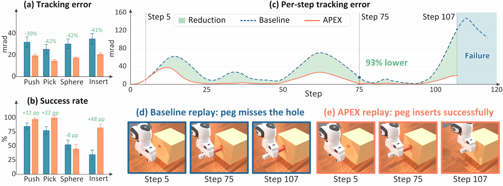
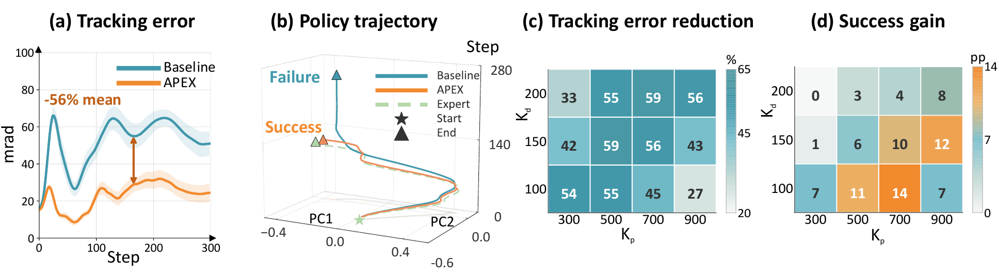
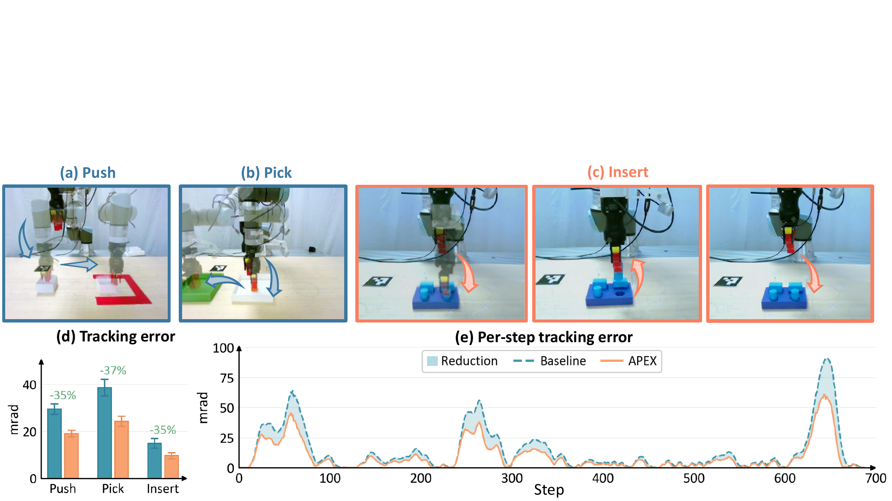
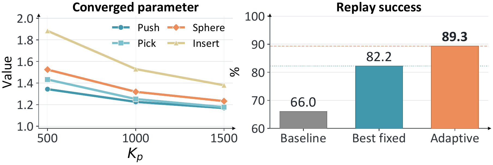
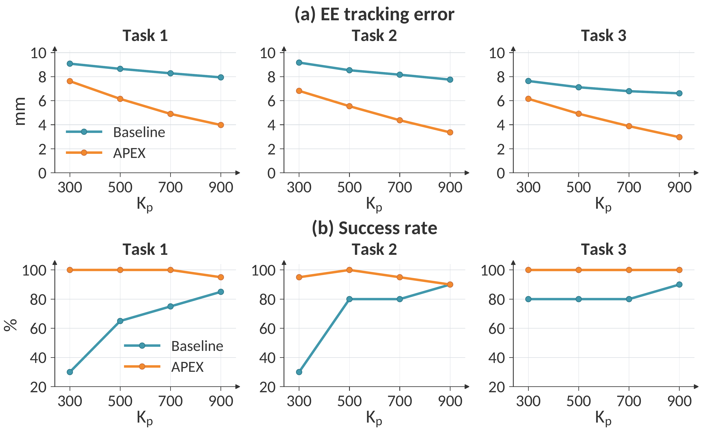

Abstract
Modern imitation learning methods, including visuomotor and Vision-Language-Action (VLA) policies, typically output high-level action references that are executed by low-level controllers. However, the absence of higher-order reference signals, together with the policy's lack of awareness of the underlying low-level control dynamics during training, inevitably induces an execution gap. As a result, realized actions deviate systematically from policy-commanded ones, with a critical impact on precision-sensitive manipulation.
Prior work either modifies the policy architecture or the low-level controller, both requiring intrusive changes to the pretrained policy or packaged controller. This raises a natural question: when the policy and controller are both treated as inaccessible black boxes, can we bridge the execution gap? We propose Adaptive Policy Execution (APEX), a plug-and-play framework inserted between the policy and the controller that reconstructs a dynamically feasible reference from policy outputs and adapts at test-time according to low-level state feedback, with a provable convergence guarantee.
Extensive empirical studies show that APEX reduces controller-induced tracking error by 41.2% on demonstration replay and improves manipulation success by 4.8-25.8 percentage points across four visuomotor and VLA policy classes.
Method
Learned policies often output position-like action references, while the robot's low-level controller may require velocity, acceleration, and system-dependent compensation to realize those references accurately. This mismatch creates a test-time execution gap even when the policy intent is useful.
APEX bridges the gap in two stages. First, an adaptive passive filter reconstructs a smooth, dynamically feasible reference and its higher-order signals from the policy output. Second, test-time adaptive terms use measured tracking error to compensate for unknown execution dynamics and controller parameters, without retraining the policy or modifying the packaged controller.
Policy and Controller Stay Frozen
APEX is inserted at the policy-controller interface and treats both sides as black boxes.
Reference Reconstruction
A passive filter supplies smooth velocity- and acceleration-like signals missing from high-level policy outputs.
Online Adaptation
Adaptive coefficients are updated from real-time feedback, with a nominal convergence guarantee.
Key Results
APEX reduces execution-side tracking error both when replaying expert references and when executing frozen learned policies. The gains are most visible in precision-sensitive manipulation, such as PegInsertion, where small tracking errors can disrupt contact timing and alignment.


Real-Robot Deployment
On a physical UR5, APEX reduces tracking error across Push, Pick, and Insert tasks under the robot's native position servo. The largest task-level gain appears on PegInsertion, where APEX raises the flow matching policy's success rate from 20% to 35%.

Adaptive Update
APEX is not just a fixed command offset. In ablations, the adaptive variant outperforms the best fixed-parameter correction and adjusts more strongly when tracking is degraded.

VLA Generalization
APEX also applies beyond joint-position policies. With π0.5 on LIBERO Spatial, APEX reduces mean end-effector tracking error from 8.0 mm to 4.9 mm and improves mean success from 72.1% to 97.9%.

BibTeX
@article{zhao2026apex,
title = {APEX: Adaptive Policy Execution for Precise Manipulation},
author = {Zhao, Mengfei and Jiang, Chenxi and An, Tuo and Jia, Jindou and Yang, Jianfei},
journal = {arXiv preprint},
year = {2026}
}